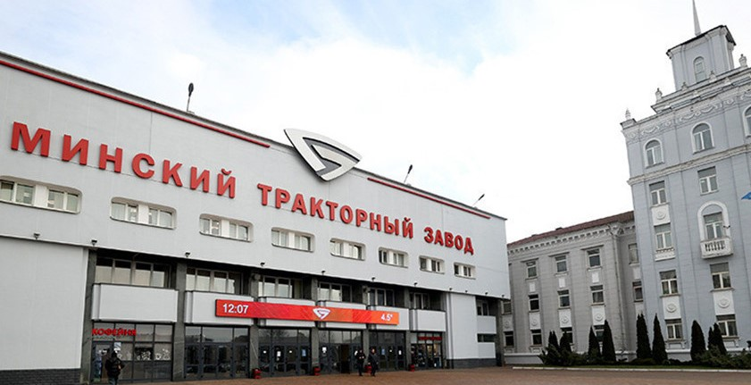
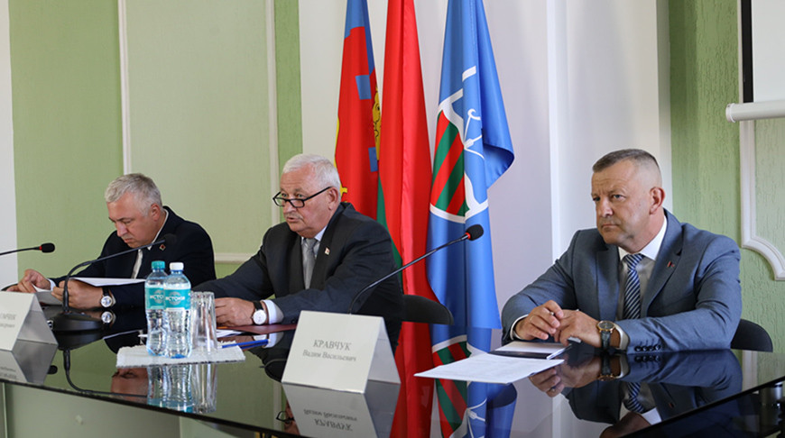
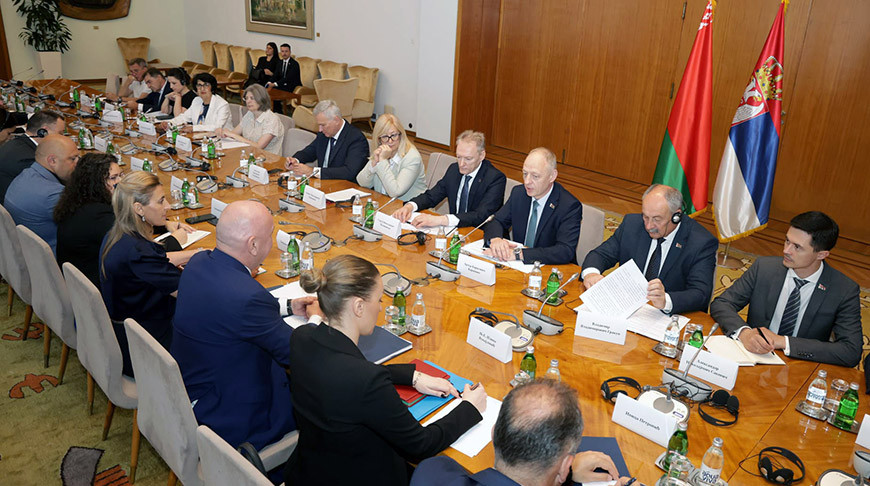

Гомельский литейный завод "Центролит" возобновил поставки в адрес московского метрополитена
Гомельский литейный завод "Центролит" возобновил поставки в адрес московского метрополитена
Дата: 20.07.2025
Дата: 20.07.2025
Гомельский литейный завод "Центролит" вновь начал поставки продукции для московского метрополитена. Это стало возможным благодаря модернизации производства и расширению ассортимента.
Гомельскі літэйны завод "Цэнтраліт" уновіў паставы ў адзінкавым адносінствах з Москвым метрополітанам. Гэта стала магчымая ўзможнасць з-за модэрынацыі вытворчасці і пашырэння ассортыменту.
МТЗ установит в литейных цехах пять индукционных печей в 2025-2026 годах
МТЗ установит в литейных цехах пять индукционных печей в 2025-2026 годах
Дата: 20.07.2025
Дата: 20.07.2025
Минский тракторный завод планирует установить пять новых индукционных печей в литейных цехах в 2025-2026 годах для повышения эффективности производства.
Мінскі тракторны завод плануе ўсталяваць пяць новых індыкцыйных пэчаў у літэйных цехах у 2025-2026 годах для павышэння эфектыўнасці вытворчасці.
Считывание кода маркировки товаров на кассах может происходить в тестовом режиме до 1 ноября
Считывание кода маркировки товаров на кассах может происходить в тестовом режиме до 1 ноября
Дата: 20.07.2025
Дата: 20.07.2025
Считывание кода маркировки товаров на кассах в Беларуси может происходить в тестовом режиме до 1 ноября 2025 года.
Счытвае код маркіравання прадуктаў на касах у Беларусі можа адбывацца ў тэставам рэжыме да 1 снежня 2025 года.
Беларусь рассчитывает увеличить поставки мясо-молочной продукции в Сербию
Беларусь рассчитывает увеличить поставки мясо-молочной продукции в Сербию
Дата: 20.07.2025
Дата: 20.07.2025
Беларусь планирует увеличить объёмы экспорта мясо-молочной продукции в Сербию. Ведутся переговоры о расширении ассортимента поставляемых товаров и упрощении процедур сертификации.
Беларусь плануе павялічыць аб'ёмы экспарту мяса-молчачнай прадукцыі ў Сербію. Вядуцца перагаворы аб пашырэнні ассортыменту паставляемых прадуктаў і ўпростэнні працэдураў сертыфікацыі.
МТЗ рассматривает возможность внедрения 3D-принтеров в производстве литейных форм
МТЗ рассматривает возможность внедрения 3D-принтеров в производстве литейных форм
Дата: 20.07.2025
Дата: 20.07.2025
Минский тракторный завод рассматривает возможность внедрения 3D-принтеров для производства литейных форм, что позволит ускорить и удешевить процесс.
Мінскі тракторны завод рассматривае магчымасць ўвадзення 3D-прынтераў для вытворчасці літэйных форм, што дазволіць паскараць і ўдэшыць працэс.

Минэкономики: реализация перспективных инвестпроектов создает новые точки роста экономики регионов
Мінэканамікі: рэалізацыя перспектыўных інвестыцыйных праектаў стварае новыя кропкі росту эканамікі рэгіёнаў
Дата: 19.07.2025
Дата: 19.07.2025
Реализация перспективных инвестиционных проектов способствует появлению новых точек роста экономики в регионах Беларуси.
Рэалізацыя перспектыўных інвестыцыйных праектаў стварае новыя кропкі росту эканамікі ў рэгіёнах Беларусі.
Более 550 тыс. акций "Коммунарки" будут безвозмездно переданы государству
Больш за 550 тысяч акцый "Каммунарка" будуць безвыплатны перададзены государству
Дата: 19.07.2025
Дата: 19.07.2025
Более 550 тысяч акций фабрики "Коммунарка" будут безвозмездно переданы государству.
Больш за 550 тысяч акцый фабрикі "Каммунарка" будуць безвыплатны перададзены государству.
МТЗ внедрит новую технологию литья в 2026 году
МТЗ внедрит новую технологию литья в 2026 году
Дата: 19.07.2025
Дата: 19.07.2025
МТЗ внедрит новую технологию литья в 2026 году для повышения качества продукции и эффективности производства.
МТЗ ўвадзіць новую тэхналагію літэння ў 2026 годзе для павышэння якасці прадукцыі і эфектыўнасці вытворчасці.
Беларусь впервые приняла участие в бизнес-форуме ШОС в статусе полноправного члена
Беларусь впервые приняла участие в бизнес-форуме ШОС в статусе полноправного члена
Дата: 19.07.2025
Дата: 19.07.2025
Беларусь впервые приняла участие в бизнес-форуме ШОС в статусе полноправного члена, что открывает новые возможности для сотрудничества.
Беларусь упершыню ўдзельнічае ў бізнес-форуме ШОС у статусе полноправного члена, што адкрывае новыя магчымасці для сяродняцтва.
Беларусь и Россия обсудили вопросы обеспечения взаимного допуска к биржевым торгам в сфере сельского хозяйства
Беларусь і Расія абмяркоўвалі пытанні забеспячэння взаемнага дапуска да біржавых торгаў у абласці сялянскага гаспадарства
Дата: 19.07.2025
Дата: 19.07.2025
В Минске прошли переговоры между представителями Беларуси и России по вопросам взаимного допуска к биржевым торгам сельскохозяйственной продукцией. Стороны обсудили механизмы упрощения процедур, обмена информацией и расширения ассортимента товаров. Ожидается, что достигнутые договорённости позволят повысить эффективность торговли и укрепить экономические связи между странами.
У Мінску прайшлі перагаворы паміж удзельнікамі Беларусі і Расіі па пытаннях взаемнага дапуска да біржавых торгаў сялянскай прадукцыяй. Стороны абмяркоўвалі механізмы ўпростэння працэдураў, абмену інфармацыяй і пашырэння ассортыменту прадуктаў. Ажыццяўляецца ачыканне, што дасягнутыя дамовы дазволіць павысіць эфектыўнасць торгаў і ўздымаць эканамічныя звязкі паміж краінамі.
Модернизация и повышение конкурентоспособности: дальнейшие шаги по развитию МТЗ
Модернизация и повышение конкурентоспособности: дальнейшие шаги по развитию МТЗ
Дата: 18.07.2025
Дата: 18.07.2025
МТЗ продолжает масштабную модернизацию производственных мощностей. В ближайшие годы предприятие планирует внедрить новые технологии, повысить качество продукции и расширить экспорт. Особое внимание уделяется автоматизации процессов и развитию кадрового потенциала. Эти шаги позволят МТЗ укрепить позиции на мировом рынке сельхозтехники.
МТЗ працягвае масштабную модэрынацыю вытворчых магутнасцей. У бліжэйшыя гады прадпрыемства плануе ўвадзіць новыя тэхналагіі, павысіць якасць прадукцыі і пашырыць экспарт. Асаблівае значэнне надаецца аўтаматызацыі працэсаў і распрацоўцы кадровага патэнцыяла. Гэтыя крокі дазволіць МТЗ ўздымаць пазіцыі на міравам рынку сяляхозтэхнікі.
Минэкономики: за последние 4 года выплачено около Br65 млн просроченной заработной платы
Мінэканамікі: за апошнія 4 гады выплачана амаль Br65 млн просрочанай заробнай платы
Дата: 18.07.2025
Дата: 18.07.2025
Министерство экономики Беларуси сообщает, что за последние четыре года предприятия страны выплатили работникам около 65 миллионов рублей просроченной заработной платы. Ведомство отмечает положительную динамику по снижению задолженности и усилению контроля за своевременной выплатой зарплат. Работа в этом направлении будет продолжена для обеспечения социальной стабильности.
Міністэрства эканамікі Беларусі абвясціла, што за апошнія чатыры гады прадпрыемства краіны выплацілі работнікам амаль 65 мільёнаў рублёў просрочанай заробнай плаціты. Вядомства адзначае дадатныя тэндэнцыі па памяншэнні залдоўнасці і павялічэнню кантролю за самачасоваю выплату зарплат. Работа ў гэтым напрамку будзе працягвацца для забяспечэння сяродняцтва.
Беларусь и Удмуртия договорились о развитии биржевой торговли
Беларусь і Удмуртыя дамоўліся аб распрацоўцы біржавай тэрмы
Дата: 18.07.2025
Дата: 18.07.2025
В ходе переговоров между представителями Беларуси и Удмуртии достигнута договорённость о развитии биржевой торговли между регионами. Стороны обсудили перспективы расширения товарооборота, внедрения новых торговых инструментов и обмена опытом в сфере биржевой деятельности. Ожидается, что сотрудничество позволит повысить эффективность торговли и создать новые возможности для бизнеса.
У працэсе перагавораў паміж удзельнікамі Беларусі і Удмуртыі дасягнута дамовы аб распрацоўцы біржавай тэрмы паміж рэгіёнамі. Стороны абмяркоўвалі перспектывы пашырэння товараабыту, ўвадзення новых тэрмычных інструментаў і абмену апытам у абласці біржавай дзейнасці. Ажыццяўляецца ачыканне, што сяродняцтва дазволіць павысіць эфектыўнасць торгаў і ствараць новыя магчымасці для бізнесу.
Беларусь значительно увеличила поставки продукции АПК в Тульскую область
Беларусь значна павялічыла паставы прадукцыі АПК ў Тульскую вобласць
Дата: 18.07.2025
Дата: 18.07.2025
Белорусские предприятия агропромышленного комплекса существенно нарастили объёмы поставок продукции в Тульскую область России. В числе экспортируемых товаров — молочная продукция, мясо, овощи и зерно. Рост поставок обусловлен высоким качеством белорусских товаров и расширением сотрудничества между регионами.
Беларускія прадпрыемствы агрэпрымышленага камплексу значна павялічылі аб'ёмы паставкі прадукцыі ў Тульскую вобласць Расіі. У сярэдзіне экспартуемых прадуктаў — молчачная прадукцыя, мясо, вагуль і зерно. Рост паставкі абусловлен высокім якасцю беларускіх прадуктаў і пашырэннем сяродняцтва паміж рэгіёнамі.
Модернизация и повышение конкурентоспособности: дальнейшие шаги по развитию МТЗ
Модернизация и повышение конкурентоспособности: дальнейшие шаги по развитию МТЗ
Дата: 18.07.2025
Дата: 18.07.2025
МТЗ продолжает масштабную модернизацию производственных мощностей. В ближайшие годы предприятие планирует внедрить новые технологии, повысить качество продукции и расширить экспорт. Особое внимание уделяется автоматизации процессов и развитию кадрового потенциала. Эти шаги позволят МТЗ укрепить позиции на мировом рынке сельхозтехники.
МТЗ працягвае масштабную модэрынацыю вытворчых магутнасцей. У бліжэйшыя гады прадпрыемства плануе ўвадзіць новыя тэхналагіі, павысіць якасць прадукцыі і пашырыць экспарт. Асаблівае значэнне надаецца аўтаматызацыі працэсаў і распрацоўцы кадровага патэнцыяла. Гэтыя крокі дазволіць МТЗ ўздымаць пазіцыі на міравам рынку сяляхозтэхнікі.
Минэкономики: за последние 4 года выплачено около Br65 млн просроченной заработной платы
Мінэканамікі: за апошнія 4 гады выплачана амаль Br65 млн просрочанай заробнай платы
Дата: 18.07.2025
Дата: 18.07.2025
Министерство экономики Беларуси сообщает, что за последние четыре года предприятия страны выплатили работникам около 65 миллионов рублей просроченной заработной платы. Ведомство отмечает положительную динамику по снижению задолженности и усилению контроля за своевременной выплатой зарплат. Работа в этом направлении будет продолжена для обеспечения социальной стабильности.
Міністэрства эканамікі Беларусі абвясціла, што за апошнія чатыры гады прадпрыемства краіны выплацілі работнікам амаль 65 мільёнаў рублёў просрочанай заробнай плаціты. Вядомства адзначае дадатныя тэндэнцыі па памяншэнні залдоўнасці і павялічэнню кантролю за самачасоваю выплату зарплат. Работа ў гэтым напрамку будзе працягвацца для забяспечэння сяродняцтва.
Беларусь и Удмуртия договорились о развитии биржевой торговли
Беларусь і Удмуртыя дамоўліся аб распрацоўцы біржавай тэрмы
Дата: 18.07.2025
Дата: 18.07.2025
В ходе переговоров между представителями Беларуси и Удмуртии достигнута договорённость о развитии биржевой торговли между регионами. Стороны обсудили перспективы расширения товарооборота, внедрения новых торговых инструментов и обмена опытом в сфере биржевой деятельности. Ожидается, что сотрудничество позволит повысить эффективность торговли и создать новые возможности для бизнеса.
У працэсе перагавораў паміж удзельнікамі Беларусі і Удмуртыі дасягнута дамовы аб распрацоўцы біржавай тэрмы паміж рэгіёнамі. Стороны абмяркоўвалі перспектывы пашырэння товараабыту, ўвадзення новых тэрмычных інструментаў і абмену апытам у абласці біржавай дзейнасці. Ажыццяўляецца ачыканне, што сяродняцтва дазволіць павысіць эфектыўнасць торгаў і ствараць новыя магчымасці для бізнесу.
Беларусь значительно увеличила поставки продукции АПК в Тульскую область
Беларусь значна павялічыла паставы прадукцыі АПК ў Тульскую вобласць
Дата: 18.07.2025
Дата: 18.07.2025
Белорусские предприятия агропромышленного комплекса существенно нарастили объёмы поставок продукции в Тульскую область России. В числе экспортируемых товаров — молочная продукция, мясо, овощи и зерно. Рост поставок обусловлен высоким качеством белорусских товаров и расширением сотрудничества между регионами.
Беларускія прадпрыемствы агрэпрымышленага камплексу значна павялічылі аб'ёмы паставкі прадукцыі ў Тульскую вобласць Расіі. У сярэдзіне экспартуемых прадуктаў — молчачная прадукцыя, мясо, вагуль і зерно. Рост паставкі абусловлен высокім якасцю беларускіх прадуктаў і пашырэннем сяродняцтва паміж рэгіёнамі.
Развитие торгово-экономического взаимодействия обсудили министры промышленности Беларуси и РФ
Развитие торгово-экономического взаимодействия обсудили министры промышленности Беларуси и РФ
Дата: 17.07.2025
Дата: 17.07.2025
Министры промышленности Беларуси и России провели встречу, на которой обсудили вопросы развития торгово-экономического взаимодействия между странами. Особое внимание уделялось совместным проектам, обмену технологиями и поддержке промышленного сектора. Стороны выразили уверенность в дальнейшем укреплении партнёрских отношений.
Міністры прамышленасці Беларусі і Расіі правела ўзаемую ўзаемапраця, на якой абмяркоўвалі пытанні распрацоўкі тэрмычнага ўзаемадзеяння паміж краінамі. Асаблівае значэнне надаецца сумесным праектам, абмену тэхналагіямі і падтрымцы прамышленага сектара. Стороны выразілі ўвераганасць у наступным уздымкі партнёрскіх адносін.
Лаос заинтересовался возможностями Беларуси в производстве калийных удобрений и детского питания
Лаос заинтересовался возможностями Беларуси в производстве калийных удобрений и детского питания
Дата: 17.07.2025
Дата: 17.07.2025
Делегация Лаоса посетила Беларусь с целью изучения возможностей сотрудничества в сфере производства калийных удобрений и детского питания. Стороны обсудили перспективы реализации совместных проектов, обмена технологиями и расширения экспорта белорусской продукции на рынок Лаоса.
Дэлегацыя Лаоса ўзяўшы ў Беларусі з мэтай вывучэння магчымасцей сяродняцтва ў абласці вытворчасці калійных удобранняў і дзіцячага пітання. Стороны абмяркоўвалі перспектывы рэалізацыі сумесных праектаў, абмену тэхналагіямі і пашырэння экспарту беларускай прадукцыі на рынак Лаоса.
Президент Лаоса предложил Беларуси сотрудничество в добыче полезных ископаемых
Прадэзідэнт Лаоса прапаў Беларусі сяродняцтва ў дабычы полезных іскопаемых
Дата: 17.07.2025
Дата: 17.07.2025
В ходе официальной встречи президент Лаоса предложил Беларуси сотрудничество в сфере добычи полезных ископаемых. Обсуждались возможности совместной разработки месторождений, обмена опытом и привлечения инвестиций в горнодобывающую отрасль.
У працэсе афіцыйнай ўзаемапраці президент Лаоса прапаў Беларусі сяродняцтва ў абласці дабычы полезных іскопаемых. Абмяркоўваліся магчымасці сумеснай распрацоўкі месцарождэнняў, абмену апытам і прываблення інвестыцый у горнадобываючую атрасль.
Холдинг БЦК увеличил экспорт цемента почти на 5% в первом полугодии
Холдинг БЦК увеличил экспорт цемента почти на 5% в первом полугодии
Дата: 17.07.2025
Дата: 17.07.2025
Холдинг "Белорусская цементная компания" в первом полугодии 2025 года увеличил экспорт цемента почти на 5%. Основными рынками сбыта стали страны СНГ и Балтии. Рост экспорта обусловлен модернизацией производств и повышением качества продукции.
Холдинг "Беларуская цементная кампанія" у першым паўгадзіні 2025 года павялічыў экспарт цементу на 5%. Асноўнымі рынкамі сбыту былі краіны СНГ і Балтыя. Рост экспарту абусловлен модэрынацыяй вытворчасці і павышэннем якасці прадукцыі.
Беларусь и ОАЭ планируют реализовать совместные проекты в АПК
Беларусь і ОАЭ плануюць рэалізаваць сумесныя праекты ў АПК
Дата: 16.07.2025
Дата: 16.07.2025
Беларусь и Объединённые Арабские Эмираты договорились о реализации совместных проектов в агропромышленном комплексе. Стороны обсудили вопросы инвестиций, обмена технологиями и расширения экспорта белорусской продукции на рынок ОАЭ.
Беларусь і Аб'юднаныя Арабскія Эміраты дамоўліся аб рэалізацыі сумесных праектаў у агрэпрымышленам камплексы. Стороны абмяркоўвалі пытанні інвестыцый, абмену тэхналагіямі і пашырэння экспарту беларускай прадукцыі на рынак АЭ.
Денежно-кредитная политика и итоги киберучений: что обсуждали представители нацбанков стран ЕАЭС
Денежно-кредитная политика и итоги киберучений: что обсуждали представители нацбанков стран ЕАЭС
Дата: 16.07.2025
Дата: 16.07.2025
В Минске состоялась встреча представителей национальных банков стран ЕАЭС, на которой обсуждались вопросы денежно-кредитной политики, кибербезопасности и обмена опытом в сфере финансовых технологий. Особое внимание уделялось итогам совместных киберучений и выработке рекомендаций по повышению устойчивости финансовых систем.
У Мінску прайшла ўзаемапраца ўдзельнікаў нацыянальных банкаў краін ЕАЭС, на якой абмяркоўвалі пытанні дзенам-крэдытнай палітыкі, кібербезопаснасці і абмену апытам у абласці фінансавых тэхналагій. Асаблівае значэнне надаецца ітогам сумесных кіберучэнняў і вырашэнні рэкамендацый па павышэнню стэйкі фінансавых сістэм.
Как будут платить пенсии заключённым: Минтруда о новациях законодательства
Як будуць плаціць пенсіі заключаным: Мінтруд аб новацыях законадательства
Дата: 16.07.2025
Дата: 16.07.2025
Министерство труда и социальной защиты разъяснило нововведения в законодательстве, касающиеся выплаты пенсий лицам, находящимся в местах лишения свободы. Новые нормы обеспечивают прозрачность и своевременность выплат, а также защиту прав получателей.
Міністэрства працы і сяродняцкай захава Беларусі разьяснілі новавведзенні ў законадательстве, якія адносяцца да выплаты пенсій асобым, якія знаходзяцца ў месцах лішэння свабоды. Новыя нармы забяспечваюць празрачнасць і самачасовасць выплат, а таксама абарону прав атрымальнікаў.
На уборке урожая задействованы 183 молодежных экипажа
На уборке урожая задействованы 183 молодежных экипажа
Дата: 16.07.2025
Дата: 16.07.2025
В нынешнем сезоне на уборке урожая в Беларуси работают 183 молодежных экипажа. Молодые специалисты вносят значительный вклад в проведение уборочной кампании, демонстрируя высокий профессионализм и ответственность.
У цяперашнім сезыёне на ўборцы ўрожая ў Беларусі работаюць 183 молодых экіпажа. Младыя спецыялісты ўносць значны ўклад у правядзенне ўборчай кампаніі, прадстаўляючы высокі прафесійныя ўзровень і адказнасць.
Резиденты ПВТ представили свои разработки организациям ЖКХ Беларуси
Рэзідэнты ПВТ прадстаўілі свае рашэнні для арганізацый ЖКХ Беларуси
Дата: 16.07.2025
Дата: 16.07.2025
Резиденты Парка высоких технологий презентовали инновационные решения для организаций жилищно-коммунального хозяйства Беларуси. Среди разработок — системы автоматизации, мониторинга и управления ресурсами, которые позволят повысить эффективность работы ЖКХ.
Рэзідэнты Парку высокіх тэхналагій прадстаўілі інновацыйныя рашэнні для арганізацый жылішча-камунікацыйнага хацяйства Беларуси. Сярэдзіна рашэнняў — сістэмы аўтаматызацыі, монітарынга і кіравання рэсурсамі, якія дазволіць павысіць эфектыўнасць работы ЖКХ.

Гродно Азот продолжит добиваться снятия незаконных санкций
Гродна Азот працягне дамагацца зняцця незаконных санкцый
Дата: 15.07.2025
Дата: 15.07.2025
ОАО "Гродно Азот" заявило о намерении продолжать работу по снятию незаконных санкций, введённых против предприятия. Руководство компании отмечает, что несмотря на внешние ограничения, завод сохраняет производственные мощности и продолжает выполнять обязательства перед партнёрами.
ААТ "Гродна Азот" заявіла пра намер працягваць працу па зняцці незаконных санкцый, уведзеных супраць прадпрыемства. Кіраўніцтва кампаніі адзначае, што нягледзячы на знешнія абмежаванні, завод захоўвае вытворчыя магутнасці і працягвае выконваць абавязацельствы перад партнёрамі.
МАЗ поставит 120 автобусов особо большой вместимости в Санкт-Петербург
МАЗ ставіць 120 аўтобусаў асобна вялікай удзелавасці ў Санкт-Пецярбург
Дата: 15.07.2025
Дата: 15.07.2025
Минский автомобильный завод заключил контракт на поставку 120 автобусов особо большой вместимости для транспортной системы Санкт-Петербурга. Новые автобусы будут оснащены современными системами безопасности и комфорта для пассажиров.
Мінскі аўтамабільны завод уклаў контракт на паставку 120 аўтобусаў асобна вялікай удзелавасці для транспартнай сістэмы Санкт-Пецярбурга. Новая аўтабусаў будуць аснаўлены сучаснымі сістэмамі бяспекі і камфорту для пасажыраў.
МАЗ поставит почти сто электробусов большой вместимости в Санкт-Петербург в этом году
МАЗ ставіць пачыста 100 электробусаў асобна вялікай удзелавасці ў Санкт-Пецярбург у гэтым годзе
Дата: 15.07.2025
Дата: 15.07.2025
В 2025 году МАЗ планирует поставить в Санкт-Петербург почти сто электробусов большой вместимости. Это позволит повысить экологичность городского транспорта и улучшить качество перевозок для жителей города.
У 2025 году МАЗ плануе паставіць у Санкт-Пецярбург пачыста 100 электробусаў асобна вялікай удзелавасці. Гэта дазволіць павысіць экалогічнасць горадскага транспарту і ўлепіць якасць перавозак для жыхароў горады.
Предприятия Беларуси в 1,5 раза увеличили экспорт в Северо-Западный федеральный округ РФ через БУТБ
Беларускія прадпрыемствы ў 1,5 разы павялічылі экспарт у Севера-Западны федэральны абласць РФ праз БУТБ
Дата: 15.07.2025
Дата: 15.07.2025
Белорусские предприятия увеличили экспорт в Северо-Западный федеральный округ России в 1,5 раза благодаря использованию Белорусской универсальной товарной биржи. Рост экспорта связан с расширением ассортимента и повышением конкурентоспособности продукции.
Беларускія прадпрыемствы павялічылі экспарт у Севера-Западны федэральны абласць Расіі ў 1,5 разы з улікам выкарыстання Беларускай універсальнай тэрмічнай біржы. Рост экспарту звязан з пашырэннем ассортыменту і павышэннем канкурентнасці прадукцыі.

Резиденты ПВТ представили цифровые технологии в сфере сельского хозяйства на тематическом семинаре
Рэзідэнты ПВТ прадстаўілі цыфровыя тэхналогіі ў агульнай сферы сялянскага гаспадарства на тэматычным семінары
Дата: 15.07.2025
Дата: 15.07.2025
На семинаре в Минске резиденты Парка высоких технологий презентовали инновационные цифровые решения для аграрного сектора. Были представлены системы мониторинга, автоматизации и анализа данных, которые помогут повысить эффективность сельскохозяйственного производства.
На семінары ў Мінску рэзідэнты Парку высокіх тэхналогій прадстаўілі інновацыйныя цыфровыя рашэнні для агульнай сферы сялянскага гаспадарства. Былі прадстаўлены сістэмы монітарынга, аўтаматызацыі і аналізу дадзеных, якія дапамогуць павысіць эфектыўнасць сялянскага гаспадарства.
Срочные рублевые депозиты физических лиц в июне увеличились на Br298,3 млн
Срочные рублевые депозиты физических лиц в июне увеличились на Br298,3 млн
Дата: 15.07.2025
Дата: 15.07.2025
В июне 2025 года объём срочных рублёвых депозитов физических лиц в белорусских банках увеличился на 298,3 миллиона рублей. Рост вкладов свидетельствует о доверии населения к банковской системе и стабильности финансового сектора.
У іюні 2025 года аб'ём срочных рублевых депазітаў фізічных асоб у беларускіх банках павялічыўся на 298,3 мільёна рублёў. Рост вкладаў паказвае на доверку насельніцтва да банкіўскай сістэмы і стабільнасць фінансавага сектара.
Резиденты ПВТ представили свои разработки организациям ЖКХ Беларуси
Рэзідэнты ПВТ прадстаўілі свае рашэнні для арганізацый ЖКХ Беларуси
Дата: 14.07.2025
Дата: 14.07.2025
Резиденты Парка высоких технологий презентовали инновационные решения для организаций жилищно-коммунального хозяйства Беларуси. Среди разработок — системы автоматизации, мониторинга и управления ресурсами, которые позволят повысить эффективность работы ЖКХ.
Рэзідэнты Парку высокіх тэхналогій прадстаўілі інновацыйныя рашэнні для арганізацый жылішча-камунікацыйнага хацяйства Беларуси. Сярэдзіна рашэнняў — сістэмы аўтаматызацыі, монітарынга і кіравання рэсурсамі, якія дапамогуць павысіць эфектыўнасць работы ЖКХ.
Банк развития наращивает финансовую поддержку экономических инициатив Гродненской области
Банк распрацоўкі нарашчвае фінансавую падтрымку эканамічных ініцыятываў Гродзенскай вобласці
Дата: 14.07.2025
Дата: 14.07.2025
Банк развития Республики Беларусь увеличивает объёмы финансирования экономических инициатив в Гродненской области. Особое внимание уделяется поддержке инвестиционных проектов и развитию малого и среднего бизнеса в регионе.
Банк распрацоўкі Рэспублікі Беларусь павялічвае аб'ёмы фінансавага падтрымкі эканамічных ініцыятываў у Гродзенскай вобласці. Асаблівае значэнне надаецца падтрымцы інвестыцыйных праектаў і распрацоўцы малых і сярэдніх бізнесаў у рэгіёне.
Стратегию долгосрочного развития до 2030 года разработают в СЭЗ "Брест"
Стратагію даўгатэрмічнага распрацоўкі да 2030 года распрацуюць у СЭЗ "Брест"
Дата: 14.07.2025
Дата: 14.07.2025
В специальной экономической зоне "Брест" началась работа по разработке стратегии долгосрочного развития до 2030 года. Документ определит ключевые направления роста, инвестиционные приоритеты и меры по повышению конкурентоспособности региона.
У спецыяльнай эканамічнай зоны "Брест" пачалася работа па распрацоўцы стратагіі даўгатэрмічнага распрацоўкі да 2030 года. Дакумент вызначыць ключавыя напрамкі росту, інвестыцыйныя прыярытэты і меры па павышэнні канкурентнасці рэгіёну.

МАРТ проверил рынки: какие нарушения обнаружены
МАРТ праверыў рынкі: якія нарышэнні выявіліся
Дата: 14.07.2025
Дата: 14.07.2025
Министерство антимонопольного регулирования и торговли провело проверки рынков и выявило ряд нарушений, связанных с ценообразованием и качеством товаров. По итогам проверок приняты меры по устранению нарушений и усилению контроля за деятельностью торговых объектов.
Міністэрства антыманопольнага рэгулявання і тэрмыцы провела праверкі рынкаў і выявіла рад нарышэнняў, звязаных з цэнавараваннем і якасцю прадуктаў. Па выніках праверкаў прынятыя меры па ўзняцці нарышэнняў і павялічэнню кантролю за дзейнасцю тэрмычных аб'ектаў.
Железнодорожный терминал в "Великом камне" планируют ввести в эксплуатацию в середине 2026 года
Железнодорожный терминал в "Великом камне" планируют ввести в эксплуатацию в середине 2026 года
Дата: 13.07.2025
Дата: 13.07.2025
В индустриальном парке "Великий камень" к середине 2026 года планируется ввести в эксплуатацию новый железнодорожный терминал. Проект позволит увеличить объёмы грузоперевозок и повысить логистическую привлекательность парка.
У індустрыяльным парку "Вялікі камень" у сердзіне 2026 года плануецца ўвесці ў эксплуатацыю новы жэлезнадоржны тэрмінал. Праект дазволіць павялічыць аб'ёмы грузаперавозок і павысіць лагістычную прываблівасць парку.
Доллар и юань подорожали, российский рубль подешевел в цене на торгах 12 июля
Доллар і юань падорожалі, російскі рубель падешеў у кошце на тэрмінах 12 ліпеня
Дата: 12.07.2025
Дата: 20.07.2025
На торгах 12 июля доллар и юань подорожали, а российский рубль снизился в цене. Изменения курсов валют отражают текущие тенденции на финансовых рынках и внешнеэкономические факторы.
На тэрмінах 12 ліпеня доллар і юань падорожалі, а російскі рубель падзяліўся ў кошце. Змены курсаў валют адлюстроўваюць бягучыя тэндэнцыі на фінансавых рынках і вонкава-эканамічныя фактары.
Беларусь планирует более тесно сотрудничать с Сербией в области биржевой торговли
Беларусь плануе больш тэсна сяродняцца з Сербіяй ў абласці біржавай тэрмы
Дата: 12.07.2025
Дата: 12.07.2025
Беларусь и Сербия обсуждают возможности расширения сотрудничества в сфере биржевой торговли. Планируется внедрение новых торговых инструментов и обмен опытом между биржами двух стран.
Беларусь і Сербія абмяркоўваюць магчымасці пашырэння сяродняцтва ў абласці біржавай тэрмы. Плануецца ўвадзенне новых тэрмычных інструментаў і абмен апытам паміж біржамі двух краін.

Хлебопечение, производство мяса птицы: Банк развития поддержал инвестпроекты Витебской области
Хлебопечение, производство мяса птицы: Банк развития поддержал инвестпроекты Витебской области
Дата: 12.07.2025
Дата: 12.07.2025
Банк развития Республики Беларусь оказал финансовую поддержку инвестиционным проектам в Витебской области, направленным на развитие хлебопечения и производства мяса птицы. Реализация проектов позволит создать новые рабочие места и повысить продовольственную безопасность региона.
Банк распрацоўкі Рэспублікі Беларусь аказаў фінансавую падтрымку інвестыцыйным праектам у Віцебскай вобласці, накіраваным на распрацоўку хлебапечэння і вытворчасці мяса птушкі. Рэалізацыя праектаў дазволіць ствараць новыя рабочыя месцы і павысіць прадоўжальную бяспеку рэгіёну.
Госстандарт актуализирует пять стандартов в области обеспечения доступной среды
Госстандарт актуализирует пять стандартов в области обеспечения доступной среды
Дата: 11.07.2025
Дата: 11.07.2025
Госстандарт Беларуси приступил к актуализации пяти национальных стандартов, направленных на обеспечение доступной среды для людей с инвалидностью. Новые требования позволят повысить уровень инклюзивности городской инфраструктуры.
Госстандарт Беларуси прыступіў да актуалізацыі пяці нацыянальных стандартаў, накіраваных на забеспячэнне даступнай сярэды для людзей з інваліднасцю. Новыя трэбаванні дазволіць павысіць ўзровень інклюзіўнасці горадскай інфраструктуры.
БУТБ из-за урагана введет дополнительные торги лесозаготовительными услугами
БУТБ з-за урагана ўведзе додатковыя тэрміны для торгаў лесозаготовільнымі паслугамі
Дата: 11.07.2025
Дата: 11.07.2025
В связи с последствиями урагана Белорусская универсальная товарная биржа организует дополнительные торги по лесозаготовительным услугам. Это позволит оперативно восстановить объёмы заготовки древесины и обеспечить потребности рынка.
У звязку з паслядоўнасцю наступстваў урагану Беларуская ўніверсальная тэрмічная біржа ўрагуваць додатковыя тэрміны для торгаў лесозаготовільнымі паслугамі. Гэта дазволіць аперацыйна аднавіць аб'ёмы загадвання дрэвасіны і забяспечыць патрэбы рынку.